又是新的一周～第一天的第一节课结束，全班仅有3名同学体力不支，而偏偏是本组的3名同学（还好我没睡，要么拍不到了）

小白为我们带来了《健全的社会》一书的分享，引发了同学们许多的思考。下面引用他的一部分感想：物质满足绝不是生活的全部，使个人的精神健全也应当成为每一个社会的头等大事。而一大群拥有完整人格与自我的、“以天下事为己任”的、负责的公民，才是构建真正文明且健全的社会的基础。

阿温为我们读了余华在精神病院演讲时发生的故事和他对于精神病院的一些认识和感悟，呼吁我们平等看待精神病人，不要戴有色眼镜看待他们。

陆纪安同学为我们带来了《穆斯林的葬礼》，让我们意识到自己生活条件的优越，激励我们在最好的条件下释放出最耀眼的光芒
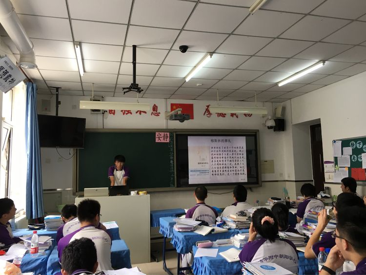rjy和我们分享了被嫌弃的松子的一生，全班同学被带入故事的悲剧情节之中。愿我们在追逐梦想的道路上，不要迷茫的走进悲伤之中。
 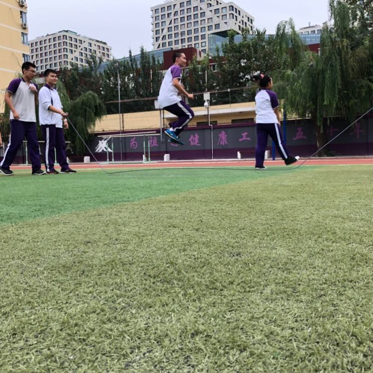
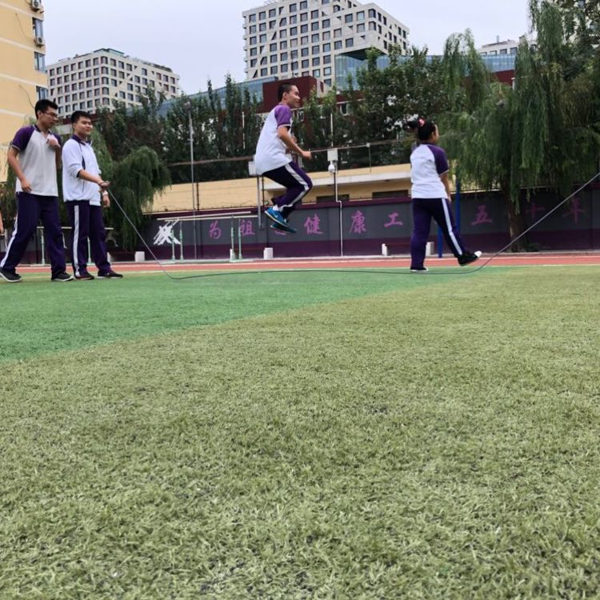
贠昊同学介绍了为了你我愿意热爱整个世界。成长不单单是学业的进步，还有自身情感的升华，我们应该成为一个愿意付出爱的人，无论形式深浅。
 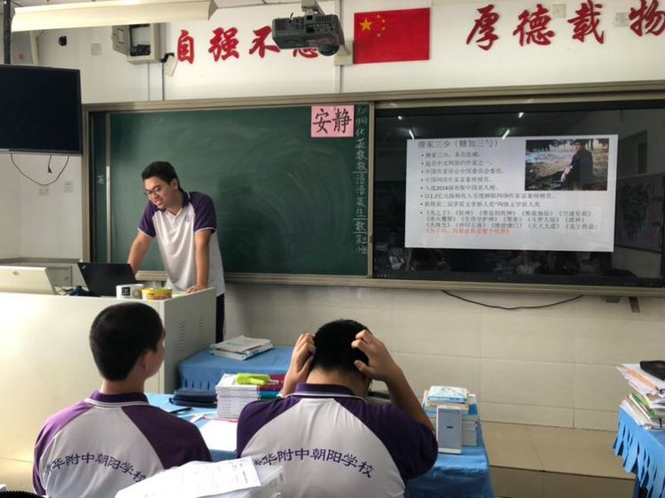
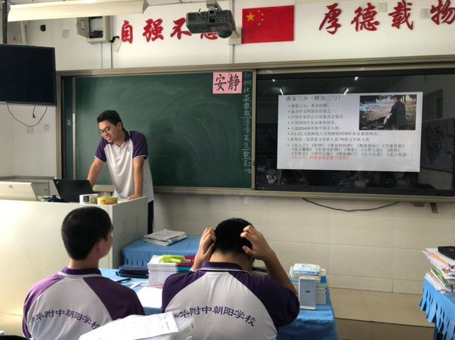
在课间操时间，同学们为运动会的集体项目大绳积极的做准备

同学们都很有跳绳才能
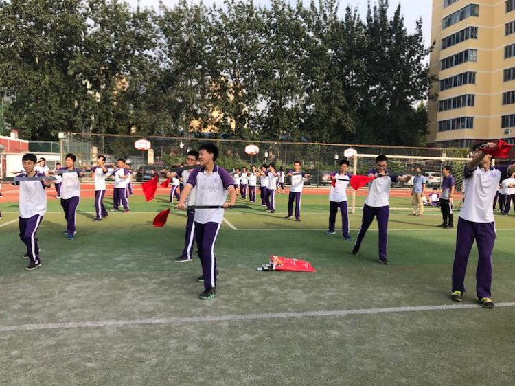
宝同学也有
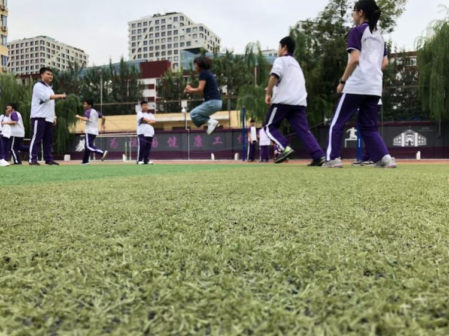除了跳绳，锯人活动也必不可少

学期开学的时候进行的物理竞赛同学们都积极参加并且取得了优异的成绩 在此也再次恭喜获奖的同学，遗憾的是张毅卓马靖彬两位获奖成员不知道哪里去了
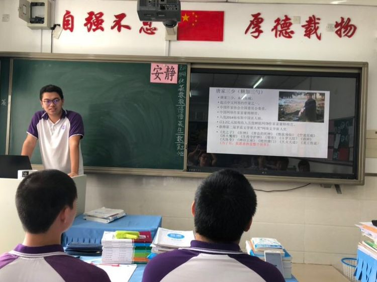运动会即将到来，为了营造一个完美的开幕式，同学们不惜化身“老头老太太”，中午，女生在楼下进行了太极的练习 并且被食堂里剩下的小姑娘和小伙子们致以了惊奇的目光...
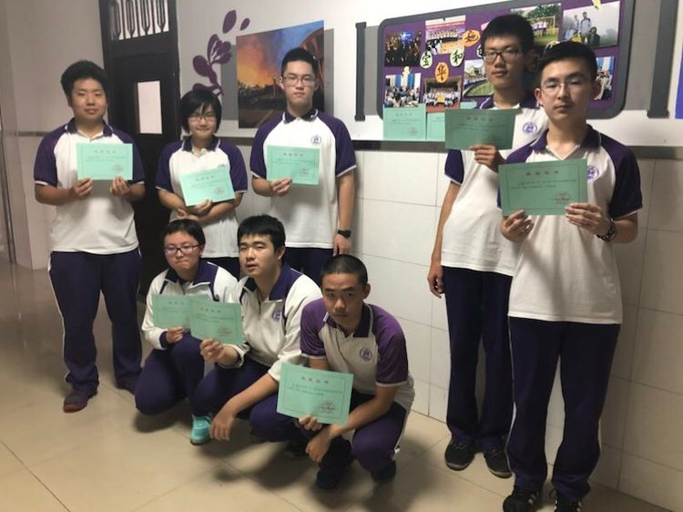男生和女生即将分别带来军体拳和太极的表演 同学们利用下午的大课间时间练习（在场地中央被四周围观的感觉很不好）
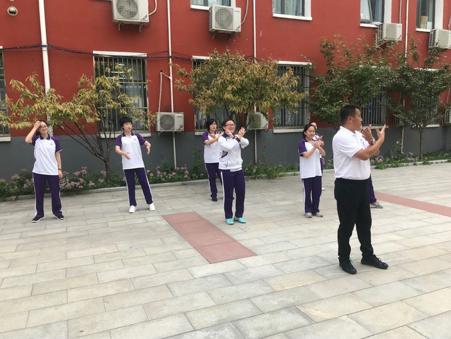在女生排练时杨舒铭同学“有幸”被请上主席台
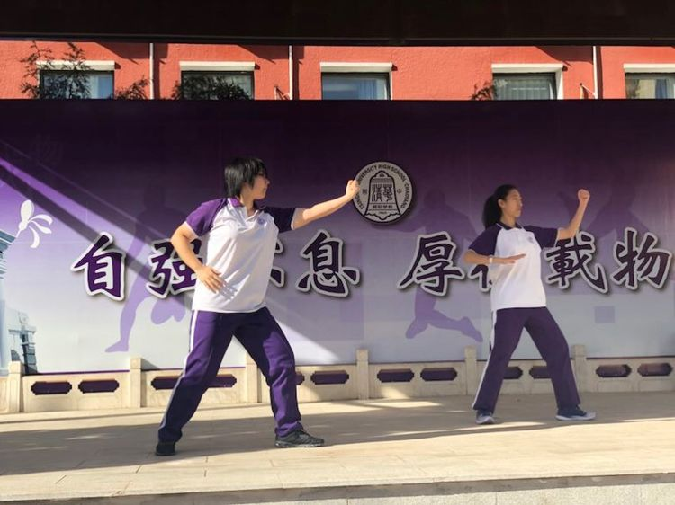
周六小剧场：ssr和元楚轩同学就染色体的形态问题展开激烈的讨论 最终元楚轩同学以感染性强烈的语言与动作赢得比赛🌚（我考试用手比划染色体会不会被当成智障逐出考场）


在最后，祝各位家长老师同学中秋节快乐，写作业愉快